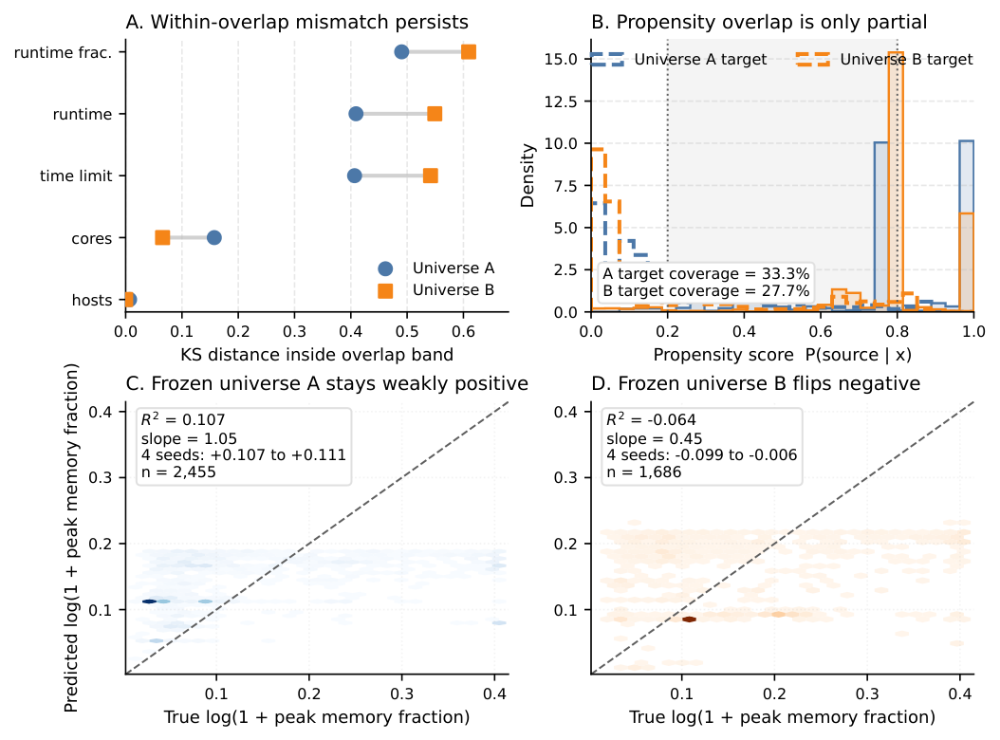
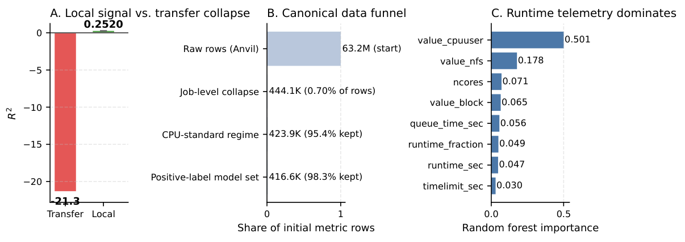

A one-page explainer based on the FRESCO cross-cluster transfer study.
Can a predictive model trained on one HPC cluster be transferred to another cluster and still make useful predictions? If transfer worked, centers could share models instead of collecting enough local telemetry to train their own.
Pooled multi-cluster training is not the same as transfer.
Earlier FRESCO work found that pooled models can perform reasonably when the target cluster is already represented in training. That is useful for integrated modeling, but it does not answer the harder operational question: can a model trained elsewhere generalize to a target cluster without target-domain training data? The answer to that harder question remained negative or unstable.
Across 84 experiments, transfer consistently failed or became unstable. That remained true even after trying the usual rescue strategies:
Cross-cluster R² dropped as low as -21, meaning the transferred model was dramatically worse than predicting the target mean.
The best frozen-universe zero-shot result was only about R² = 0.107, and even that was not stable across similar setups.
Adding up to 500 labeled target examples still failed to beat the zero-shot reference.
A local Anvil model reached about R² = 0.252 under a strict temporal split, showing the task is useful locally even if it does not transfer.
The core issue is not only distribution shift. It is also semantic non-equivalence: clusters may use the same feature names while measuring different underlying quantities.
A unified schema does not guarantee a shared labeling function.
Suppose Cluster A reports peak memory using a cgroup-based measure that includes filesystem page cache, while Cluster B reports RSS without cache. Both datasets may have a column called memory, but they do not mean the same thing. A model trained on Cluster A can therefore learn relationships tied to A’s accounting rules and then fail when deployed on Cluster B.


That does not mean cross-cluster comparison is impossible in principle. It means it is not credible under current conditions without stronger provenance, measurement standardization, and explicit comparability diagnostics.
Source basis: FRESCO cross-cluster study, including 84 experiments on zero-shot transfer, adaptation, and few-shot calibration, plus local Anvil blueprint results and earlier pooled-model observations.